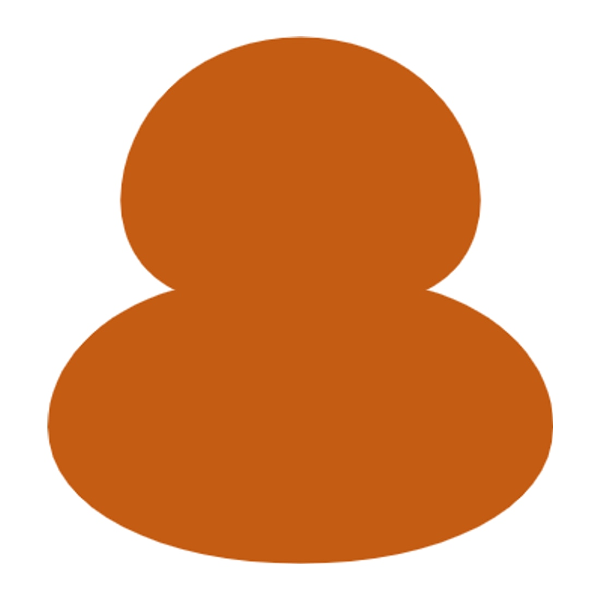
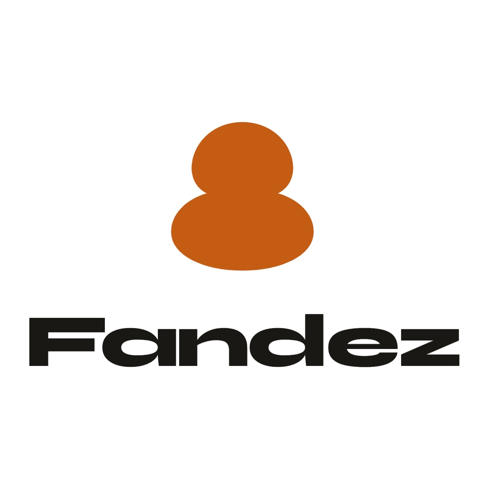

Contorno
Trazo abierto. Interior transparente. Wordmark: Unbounded Bold.
Oficial: 01 Contorno + tipografía Unbounded Bold. Cada estilo tiene sin marca / con marca; el tipo 1 también tiene lockup horizontal.
Trazo abierto. Interior transparente. Wordmark: Unbounded Bold.
Solo el símbolo y la tipografía, con canal alpha. Fondo ajedrezado = transparencia.
También en public/brand/ y docs/inapi/.
Copa rellena ámbar. Más peso visual, icono denso.


Cuadrado ámbar redondeado + símbolo blanco (home screen).
Círculo carbón con contorno ámbar. Aspecto de marca/certificación.
Campo carbón + trazo ámbar. Para fondos oscuros y merchandising.